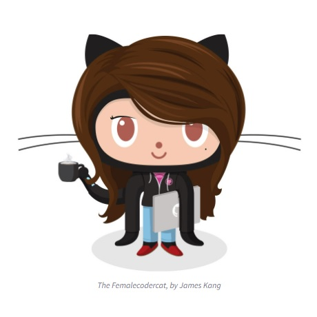

All About GitHub
- Q. What is a version control system?
- A. A system that keeps records to changes of a file or set of files, so they can be tracked later.
- Q. What is Git?
- A. An open source version control system.
- Q. What is GitHub?
- A. A free Git repository hosting service.
- Q. What is the difference between Git and GitHub?
- A. A git is a version control system that allows you to keep a record of changes to files, while GitHub is a free internet service that allows you to manage Git repositories.
- Q. Who started GitHub and how was it started?
- A. GitHub was developed by CHris Wanstrath, P.J. Hyett, Tom Preston-Werner, and Scott Chacon.
- Q. What company owns it now?
- A. Microsoft owns GitHub now.
- Q. How much does a Github account cost?
- A. The basic plan is free, the team plan is $44/year per user, and the enterprise plan is $231/year per user.
- Q. What is the Octocat?
- A. It is the mascot of GitHub.

Git/GitHub Terms
- Repository:
a central location where data is stored and managed
- Commit:
updating a record in a database
- Fork:
a new repository that shares code and visibility settings with the original "upstream" repository
- Push:
uploads the content of the local repository to the remote repository
- Pull Requests:
allows you to nofity others of chnages made to the repository
- Workflows:
an automated process that runs one or more jobs
- Issues:
a system to track bugs within the GitHub service
- Raw Button:
opens the files without any HTML formatting
- Blame Button:
gives information on every line in a file which includes the last modified author, time and commit hash.